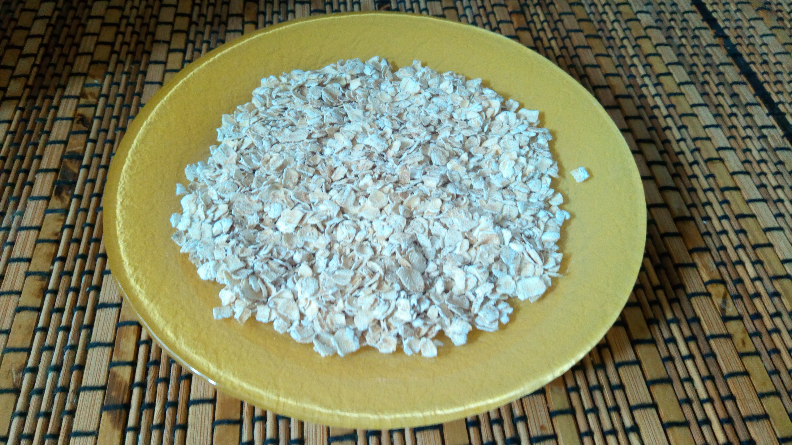
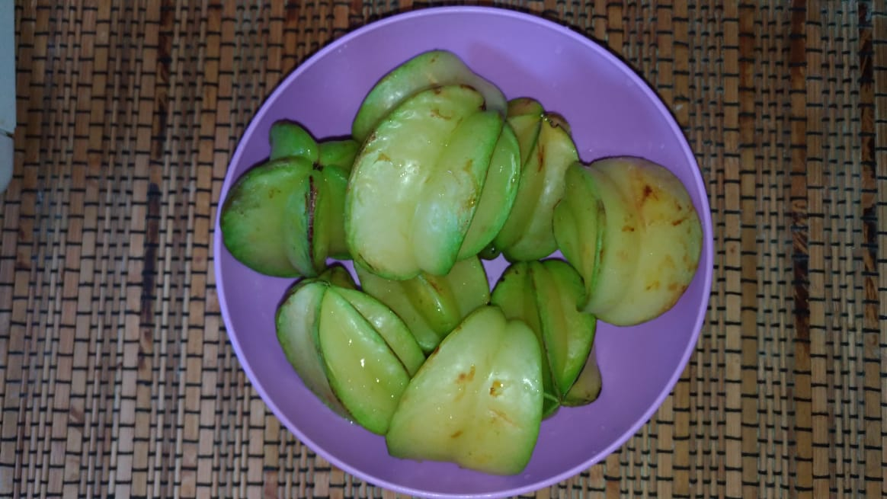

BISCOITO DE CARAMBOLA
Veja os benefícios do biscoito de carambola.
A aveia tem grande concentração de fibras solúveis, seu consumo regular está relacionado à menor absorção do colesterol da dieta. Isso auxilia o tratamento e a manutenção dos níveis de colesterol sanguíneo e o funcionamento regular do intestino. 
A carambola por ser rica em vitaminas, como a vitamina A, C e do complexo B e fortalece o sistema imunológico. Além disso, age como antioxidante, fazendo com que o corpo seja capaz de combater os radicais livres. Já as vitaminas do complexo B (riboflavina, piridoxina) atuam favorecendo o metabolismo e várias outras funções dentro do corpo. O potássio da carambola ajuda o sistema sanguíneo, diminuindo a pressão e regulando os batimentos cardíacos. 
Criada com amor por Willyan, Victória, Beatriz, Ana e Tomás
Informções Nutricionais
| Quantidade por porção | % VD (*) | |
|---|---|---|
| Valor energético | 564kcal=2.361kJ | 28% |
| Carboidratos | 98g | 33% |
| Proteínas | 7,6g | 10% |
| Gorduras totais | 17g | 31% |
| Gorduras saturadas | 8,7g | 40% |
| Gorduras trans | 0g | (**) |
| Fibra alimentar | 4,6g | 19% |
| Sódio | 314mg | 13% |
(*) % Valores Diários de referência com base em uma dieta de 2.000 kcal ou 8400 kJ. Seus valores diários podem ser maiores ou menores dependendo de suas necessidades energéticas.
(**) VD não estabelecido.
Ingredientes: Aveia em flocos, carambola, açúcar demerara, margarina, ovo de galinha, fermento em pó
NÃO CONTÉM GLÚTEN
ALÉRGICOS: CONTÉM LEITE, OVOS, DERIVADOS DE LEITE, SOJA.
Vídeo da produção do biscoito de carambola